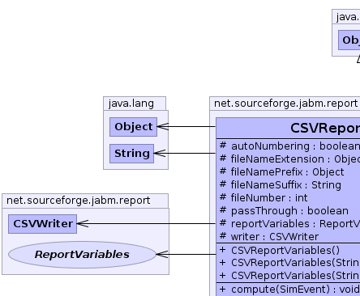
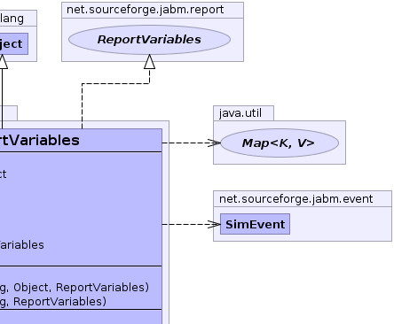
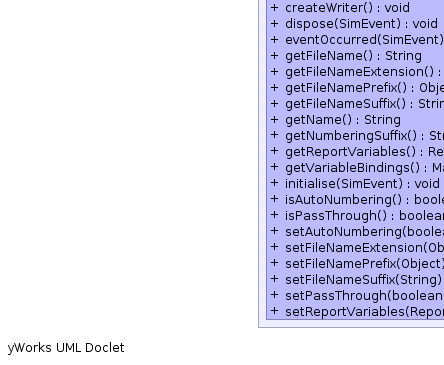
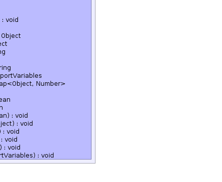

net.sourceforge.jabm.report.CSVReportVariables
net.sourceforge.jabm.report.CSVReportVariables
|
|||||||||
| PREV CLASS NEXT CLASS | FRAMES NO FRAMES | ||||||||
| SUMMARY: NESTED | FIELD | CONSTR | METHOD | DETAIL: FIELD | CONSTR | METHOD | ||||||||
java.lang.Object
public class CSVReportVariables
CSVReportVariables automatically record other ReportVariables to a comma separated variables (CSV) file whenever they are computed.
|  |  |
|  |  |
| Field Summary | |
|---|---|
protected boolean |
autoNumbering
|
protected java.lang.Object |
fileNameExtension
|
protected java.lang.Object |
fileNamePrefix
|
protected java.lang.String |
fileNameSuffix
|
protected int |
fileNumber
|
protected boolean |
passThrough
|
protected ReportVariables |
reportVariables
This report collects the data that we will write. |
protected CSVWriter |
writer
|
| Constructor Summary | |
|---|---|
CSVReportVariables()
|
|
CSVReportVariables(java.lang.String fileNameSuffix,
java.lang.Object fileNamePrefix,
ReportVariables reportVariables)
|
|
CSVReportVariables(java.lang.String fileNameSuffix,
ReportVariables reportVariables)
|
|
| Method Summary | |
|---|---|
void |
compute(SimEvent event)
Update variables. |
void |
createWriter()
|
void |
dispose(SimEvent event)
Clean up any side effects (eg close file). |
void |
eventOccurred(SimEvent event)
|
java.lang.String |
getFileName()
|
java.lang.Object |
getFileNameExtension()
|
java.lang.Object |
getFileNamePrefix()
|
java.lang.String |
getFileNameSuffix()
|
java.lang.String |
getName()
|
java.lang.String |
getNumberingSuffix()
|
ReportVariables |
getReportVariables()
|
java.util.Map<java.lang.Object,java.lang.Number> |
getVariableBindings()
Get the values calculated by this report. |
void |
initialise(SimEvent event)
Initialise the variables in response to event. |
boolean |
isAutoNumbering()
|
boolean |
isPassThrough()
|
void |
setAutoNumbering(boolean autoNumbering)
|
void |
setFileNameExtension(java.lang.Object fileNameExtension)
|
void |
setFileNamePrefix(java.lang.Object fileNamePrefix)
|
void |
setFileNameSuffix(java.lang.String fileNameSuffix)
|
void |
setPassThrough(boolean passThrough)
|
void |
setReportVariables(ReportVariables reportVariables)
|
| Methods inherited from class java.lang.Object |
|---|
clone, equals, finalize, getClass, hashCode, notify, notifyAll, toString, wait, wait, wait |
| Field Detail |
|---|
protected java.lang.String fileNameSuffix
protected java.lang.Object fileNamePrefix
protected java.lang.Object fileNameExtension
protected CSVWriter writer
protected ReportVariables reportVariables
protected int fileNumber
protected boolean autoNumbering
protected boolean passThrough
| Constructor Detail |
|---|
public CSVReportVariables(java.lang.String fileNameSuffix,
java.lang.Object fileNamePrefix,
ReportVariables reportVariables)
public CSVReportVariables(java.lang.String fileNameSuffix,
ReportVariables reportVariables)
public CSVReportVariables()
| Method Detail |
|---|
public void compute(SimEvent event)
ReportVariables
compute in interface ReportVariablespublic void createWriter()
public java.lang.String getFileName()
public java.lang.String getNumberingSuffix()
public java.util.Map<java.lang.Object,java.lang.Number> getVariableBindings()
Report
getVariableBindings in interface ReportMap of user-readable variable names to their
associated values.public java.lang.String getFileNameSuffix()
public void setFileNameSuffix(java.lang.String fileNameSuffix)
public java.lang.Object getFileNamePrefix()
public void setFileNamePrefix(java.lang.Object fileNamePrefix)
public void eventOccurred(SimEvent event)
eventOccurred in interface EventListenerpublic void dispose(SimEvent event)
ReportVariables
dispose in interface ReportVariablespublic void initialise(SimEvent event)
ReportVariables
initialise in interface ReportVariablespublic ReportVariables getReportVariables()
public void setReportVariables(ReportVariables reportVariables)
public boolean isAutoNumbering()
public void setAutoNumbering(boolean autoNumbering)
public java.lang.Object getFileNameExtension()
public void setFileNameExtension(java.lang.Object fileNameExtension)
public boolean isPassThrough()
public void setPassThrough(boolean passThrough)
public java.lang.String getName()
getName in interface ReportgetName in interface ReportVariables
|
|||||||||
| PREV CLASS NEXT CLASS | FRAMES NO FRAMES | ||||||||
| SUMMARY: NESTED | FIELD | CONSTR | METHOD | DETAIL: FIELD | CONSTR | METHOD | ||||||||